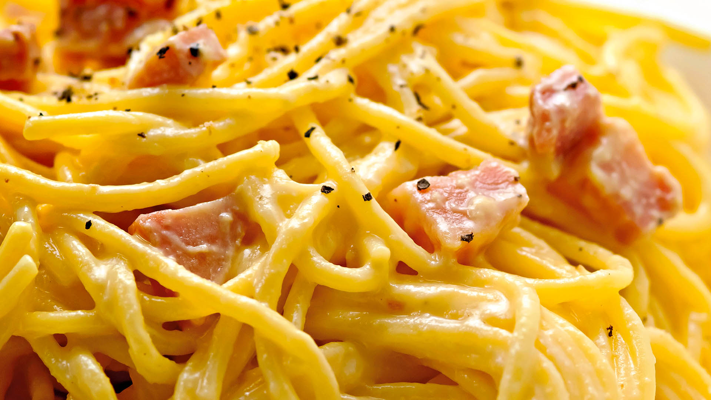

Carbonara

Ingredients:
- 400g spaghetti
- 200g guanciale or pancetta, diced
- 3 large eggs
- 1 cup (about 100g) grated Pecorino Romano cheese
- Salt and black pepper to taste
Instructions:
- Bring a large pot of salted water to boil. Cook the spaghetti according to the package instructions until
al dente.
- In a skillet, cook the diced guanciale or pancetta over medium heat until it becomes crispy. Remove from
heat and set aside.
- In a bowl, whisk together the eggs and grated Pecorino Romano cheese. Season with black pepper.
- Once the spaghetti is cooked, drain it and immediately toss it in the egg and cheese mixture. The heat from
the pasta will cook the eggs and create a creamy sauce.
- Add the crispy guanciale or pancetta to the pasta and toss until well combined.
- Adjust seasoning with salt and pepper as needed. Serve immediately and enjoy!